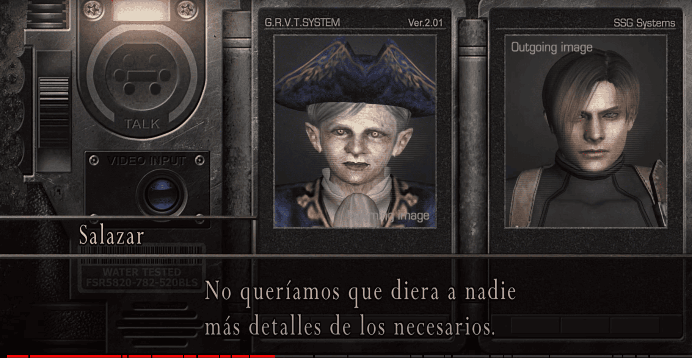
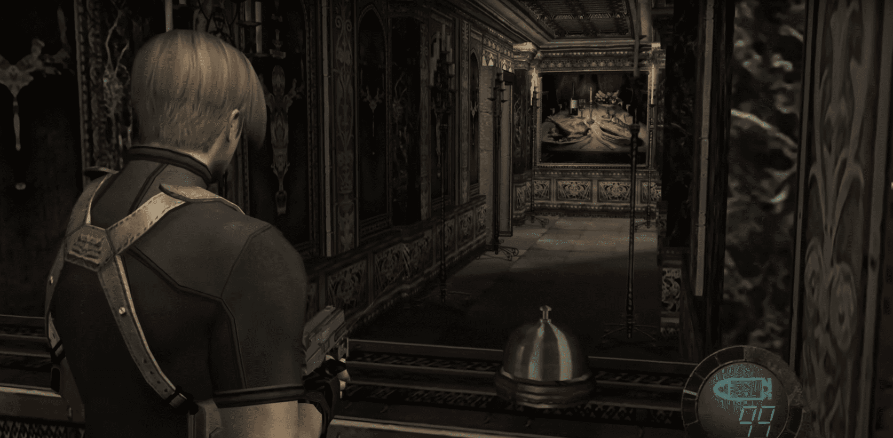

←Episodio 3: Castillo (interior)→
Ahora estás en un gran castillo que funciona como un monasterio para Los Illuminados. El puente levadizo de vuelta al pueblo está cerrado permanentemente. Comienzas en un patio en la entrada del castillo. Primero entra en el edificio pequeño a la derecha para encontrar al Mercader. Tiene muchas cosas nuevas para ti, incluyendo un maletín más grande y nuevas armas. Ensambla el Stein de cerveza y las piezas de la Máscara elegante tanto como puedas y véndelas ahora, incluso si no están completas; las piezas faltantes están todas de vuelta en el pueblo, fuera de tu alcance ahora. Las armas a la venta incluyen una pistola, una escopeta y un rifle nuevos y mejorados, y es posible que quieras conseguirlos dependiendo de tu dinero en efectivo y de cuánto hayas invertido en tus modelos actuales. Vende las armas que estás reemplazando por dinero y para hacer espacio en tu inventario. El maletín más grande tiene una etiqueta de precio considerable, pero casi siempre vale la pena la inversión. Toma la Hierba verde de la mesa; hay una máquina de escribir junto a ella si quieres guardar. Sal del edificio y comienza a explorar el patio en busca de objetos. Hay cuatro barriles cerca de las escaleras y dos cajas y otro barril en la esquina noreste; la caja de la derecha tiene una serpiente dentro. Abre el cofre del tesoro detrás de la tienda del Mercader para encontrar 5000 PTAS. Sube las escaleras y atraviesa la puerta hacia la siguiente área.

Esta es un área grande y compleja y te enfrentas a nuevos enemigos llamados fanáticos. Proteger a Ashley aquí es complicado, así que es una buena idea llevar un registro de dónde puedes dejarla segura. Sigue el camino para encontrar un área abierta. Hay munición de rifle sobre una gran caja y puedes ver monjes a lo lejos, así que probablemente estés destinado a dispararles desde lejos, pero también podrías ahorrar munición por ahora y enfrentarte a ellos cuando estén más cerca. Sigue la escalera a la derecha. En la cima hay una breve escena en la que un sacerdote te ve y grita "¡Mátalo!". Ahora, las catapultas bombardean el área con bolas de fuego; pueden ser medievales, pero duelen mucho y probablemente matarán a Ashley de un solo golpe. Sin embargo, su temporización es regular y siempre golpean los mismos lugares, por lo que no deberían ser demasiado difíciles de evitar una vez que aprendas el patrón. Lo primero que destruyen las catapultas es un pozo a la derecha; examina los restos para obtener un Espinel, pero sigue moviéndote y observa tu tiempo para evitar ser golpeado.
Sigue el camino y baja las escaleras a la izquierda. Te encontrarás con los monjes a los que pudiste haber perdonado antes, así que derrota a estos ahora si lo hiciste; deberías estar a salvo de las catapultas aquí. Continúa para encontrar una habitación con un cañón. Hay una pista de que necesitas subirlo de alguna manera. Obtén tres barriles aquí. Regresa y continúa hacia el arco. Dispara al barril rojo en el balcón alto en la pared frente a ti para desactivar esa catapulta. Avanza hacia otra escalera, pero no subas todavía. Haz que Ashley espere en el rellano y luego date la vuelta y observa a los monjes que comienzan a subir por el camino detrás de ti. Puedes intentar que las catapultas arrojen una bola de fuego sobre ellos, de lo contrario, elimínalos a distancia o derrotalos normalmente.

Estaciona a Ashley en las escaleras por un momento y ve casi hasta arriba. Apunta a través de la tronera, o abertura, a la derecha y dispara al barril rojo junto al monje que maneja la catapulta. El área en la parte superior de la escalera debería estar segura ahora. Apunta hacia la derecha en la parte superior de la escalera y dispara a través de la ventana de un pequeño edificio para golpear a un fanático. Está usando una máscara a prueba de balas, así que solo lo enfurecerá; espera a que venga por ti y derrota lo con un arma de corto alcance. Revisa la puerta para obtener otra pista sobre cómo proceder. Sal a la pasarela una corta distancia, date la vuelta nuevamente y obtén un tercer barril en el balcón hacia el norte; solo la parte superior es visible. Continúa cruzando el puente, manteniéndote lo más a la derecha posible. Si no lo derrotaste antes, el monje enmascarado te atacará; muévete un poco hacia un lado para no tener que preocuparte por la catapulta y derrota lo. Recoge a Ashley y entra en el pequeño edificio. Obtén dos cajas y abre el cofre del tesoro para obtener una Hierba Amarilla. Haz que Ashley espere allí. Ve al lado izquierdo del edificio y encuentra el Brazalete de Oro en un cofre del tesoro.
Hay una catapulta final en la pared norte a la derecha. Atacará si intentas cruzar el puente hacia el este, así que ve hasta la mitad y dispara al monje antes de que te vea. O mejor aún, dispárale desde una ventana en el mirador al final del puente. No hay barril rojo con este. Ahora que es seguro, opera la manivela al final del puente, esto levantará el cañón visto anteriormente hasta la parte superior. (Puede ser que necesites que Ashley opere la manivela mientras tú te ocupas de los dos cultistas que se acercan.) Ponte detrás del cañón y dispara, demolirá la puerta cerca de la parte superior de las escaleras. Pasa por allí y encuentra al comerciante al otro lado. Luego, atraviesa la puerta hacia la próxima área.

Ingrid se comunica contigo y le informas sobre el castillo. Está a punto de decirte algo importante cuando es interrumpida por interferencias. Obtén 2000 PTAS del armario y Munición para Pistola de la mesa. Revisa el panel de oro en la pared y toma la espada de platino. Más adelante, encontrarás una espada de oro en un panel de platino para intercambiarla. Cuando subas las escaleras, un grupo de fanáticos te atacará. Permite que se agrupen en las escaleras para controlar el avance. Una vez en la parte superior de las escaleras, más monjes entrarán en el nivel inferior, así que no dejes a Ashley abajo esperando. Permanece en la parte superior de la escalera y permite que suban en grupos.
El líder del ataque, un fanático vestido de rojo, tiene un nuevo tipo de parásito que aparece cuando ha recibido suficiente daño; no blandirá una espada como los aldeanos, pero si se acerca demasiado, te decapitará. Revisa la habitación en la parte superior de las escaleras en busca de objetos; encontrarás dos cajas al lado de la cama, 1800 PTAS en la mesa y una Hierba Roja en un armario. Luego, toma la Espada Dorada del panel de platino y coloca la Espada de Platino aquí. Regresa abajo y coloca la Espada Dorada en el panel dorado para completar el intercambio y el panel de platino se abrirá. Atraviesa hacia la siguiente área.
Entras en un pasillo que conduce a una puerta hacia la parte del castillo al norte. Hay una escena donde Luis te alcanza. Está a punto de darte un antídoto para el parásito cuando se da cuenta de que debe haberlo perdido. Él sabe que ambos fueron infectados y confirma los síntomas. Luego se va a buscar el antídoto nuevamente. La única manera de avanzar es la puerta al oeste, pero hay fanáticos adentro. Entra y hiere al que está visible, luego retrocede a través de la puerta y espera a que todos se agrupen en la puerta. Retrocede al pasillo si es necesario. Si pasas por la puerta y miras a la derecha, verás un barril rojo en la esquina, por lo que otro enfoque es atraer a los enemigos cerca de él y hacerlo explotar. Deja a Ashley fuera del área de la puerta si haces esto, ya que tendrás que esquivar a los monjes para que funcione.
Hay un edificio pequeño en la esquina; obtén dos barriles, 2500 PTAS de un gabinete y munición para pistola de la mesa. Hay un arquero disparando desde el pasillo a la izquierda, así que asegúrate de mantenerte fuera de su línea de visión. Si logras evitar ser visto, entonces dispárale con un rifle a través de la ventana; de lo contrario, estaciona a Ashley en un lugar seguro y derrota al arquero como mejor puedas. Cuando pases por el siguiente arco, saldrán dos monjes con escudos. Estos requieren el doble de potencia de fuego para ser derrotados porque primero debes destruir sus escudos. Si tienes una granada de mano de repuesto, lánzala detrás de ellos para pasar por alto los escudos. El Rifle de Asalto destruirá los escudos por completo; de lo contrario, intenta hacer agujeros en los escudos y luego dispara a través de los agujeros. Si aún no has usado el barril rojo, podrías atraerlos hacia él y usarlo ahora con buen efecto.

Entra al siguiente edificio y obtén una Hierba Verde y un barril (sin marca), dejando el cofre del tesoro para el final. Antes de abrirlo, toma nota de la posición del barril rojo cerca de la entrada. Cuando abras el cofre del tesoro y obtengas la Llave de la Puerta del Castillo, un grupo de fanáticos vendrá por la puerta, así que date la vuelta rápidamente y dispara al barril para reducir considerablemente su número. Si no logras realizar el truco con el barril, quizás quieras lanzar una granada para ralentizarlos. Si los fanáticos restantes se vuelven demasiado para ti, elige la ruta con menos enemigos para pasar y avanza rápidamente para hacer una parada en un lugar mejor. Ahora tienes la llave, así que úsala para desbloquear la puerta del castillo y pasar al siguiente sector.
Entras en un gran vestíbulo y puedes escuchar una risa espeluznante que viene de alguna parte. Avanza un poco para desencadenar una escena cortada donde aparece Ramon Salizar y se presenta. Él está a cargo del castillo y dice que debido al parásito, tú y Ashley pronto se unirán a él, pero solo Ashley es importante. Se va por donde entró. Avanza un poco y la puerta de enfrente se cierra, hay un relieve en ella que falta algunas piezas. Necesitas encontrar estas piezas y eso será el objetivo principal de esta parte del castillo.

Hay cuatro grandes jarrones de cerámica junto a los escalones; rompe estos para obtener objetos como con cajas y barriles. Algunos contienen serpientes, pero nuevamente, cuando llegue el momento, te informaremos cuáles son. Dispara al objeto brillante en el arco sobre los escalones para obtener la Gema Verde, un accesorio para la Máscara Elegante. (Si no conseguiste esta gema en el pueblo, entonces podrías usarla para completar la Máscara Elegante que obtuviste allí, pero vamos a conseguir otra Máscara Elegante en el castillo, así que eso realmente no ayudará). Hay una máquina de escribir aquí y es una buena idea guardar, ya que ha pasado un tiempo y pasará un tiempo hasta la próxima. En general, los puntos de guardado están más distantes ahora que no estamos al principio del juego, así que guarda cuando puedas. Incluso podría valer la pena retroceder a una máquina de escribir anterior después de una batalla difícil.
La puerta al oeste está cerrada con llave. También encontrarás que los fanáticos han repoblado el área sur, por lo que retroceder será algo incómodo. Eso deja la puerta al este, así que ve en esa dirección. Entras en un largo pasillo en un balcón que da a otra habitación. Toma dos barriles a la izquierda y verifica la puerta junto a ellos para aprender que la otra habitación es una prisión. Toma un jarro de un armario y verifica el retrato de Saddler al otro lado del pasillo para obtener 5000 PTAS. Hay retratos similares en otras partes del castillo, así que mantén los ojos abiertos. Recoge munición para pistola al lado del retrato. Continúa y toma dos barriles más al final del pasillo; uno de estos contendrá una Hierba Amarilla.

Toma "Captura a Luis Sera" de la pared. Aparentemente, Luis está de nuevo en la cima de la lista de más buscados de Saddler porque tomó una "muestra" muy importante. El camino hacia adelante está bloqueado por dos caballos que lanzan fuego, pero si examinas el retrato a la derecha, encontrarás la Llave de la Prisión. El único lugar donde usar la Llave de la Prisión sería la propia prisión, así que empieza a dirigirte allí. En el camino, detente en el armario donde estaba el jarro, equipa tu rifle y dispara al objeto que está sobre la viga sobre la prisión. Continúa hacia la puerta de la prisión, desbloquéala, deja a Ashley en un lugar seguro en la parte superior de las escaleras y recoge los cartuchos de escopeta que acabas de derribar. Recoge también la Hierba Verde de la esquina. Toma nota de las campanas aquí, ya que serán útiles dentro de un momento.
Al acercarte a la celda en el lado opuesto, obtienes una vista cercana del prisionero dentro. Está encadenado y sus ojos han sido cosidos. En caso de que se te ocurra alguna idea brillante, es invulnerable mientras tenga la espalda contra la pared. Hay un interruptor dentro de la jaula que apaga los caballos en el pasillo, pero entrar en la jaula hace que su ocupante se libere. Rápidamente da la vuelta y sal de la jaula.
Esta criatura se llama Garrador y, desafortunadamente, no se puede razonar con él. De hecho, puedes activar la palanca en la jaula en cualquier momento, pero si intentas salir sin derrotarlo, la puerta se cerrará frente a ti. Ataca con garras de metal similares a las de Wolverine atadas a sus brazos y duelen mucho. Así que no te quedes con poca salud si puedes evitarlo. Sin embargo, tienes una ventaja en esta pelea: el Garrador es ciego. El ruido, como disparar un arma o correr, llamará su atención y lo provocará a atacar, pero si mantienes distancia, no disparas un arma y no corres, debería vagar sin rumbo. De vez en cuando, golpeará el aire al azar, así que es importante mantenerse atento a dónde está; retroceder lentamente parece ser una maniobra efectiva aquí.
El punto débil del Garrador es el parásito en su espalda, pero conseguir un buen disparo en él es un poco complicado. Primero, párate un poco lejos de una de las campanas y dispara, asegurándote de que no estés entre ella y el monstruo. El sonido de la campana suele hacer que la criatura corra hacia ella y clave sus garras en la pared. Las garras quedarán atrapadas allí durante unos segundos, así que aprovecha la oportunidad antes de que pueda liberarse. Desafortunadamente, la campana será destruida por todo esto, por lo que solo puedes usar esta táctica dos veces. Si tienes una granada de mano o incendiaria de repuesto, lánzala para causarle algo de daño. Si eres paciente y bueno para mantenerte fuera de su camino, puedes rodearlo por detrás o simplemente esperar hasta que se dé la vuelta y te dé la espalda, entonces dispara, corre hacia un lado y camina un poco para que pierda tu rastro. Otra forma es pararte cerca de una pared, provocarlo para que cargue con un disparo de pistola, luego esquiva y dispara cuando sus garras se queden atascadas en la pared. Sin embargo, necesitarás encontrar dónde las paredes son lo suficientemente blandas para que esto funcione. Recuerda que cualquier disparo o carrera le indicará dónde estás; a veces puedes usar eso para engañarlo.
El monstruo deja caer 15000 Pesetas, así que recógelo, regresa a la celda y tira de la palanca, recoge a Ashley y sal de la habitación. Con los caballos ya no lanzando fuego, parece que los fanáticos están libres de acercarse desde más allá, así que estate atento a que vengan por el pasillo. Puedes intentar disparar a la lámpara para que derrame fuego sobre ellos, pero no debería ser difícil derrotarlos si no lo logras. Al doblar la esquina hay dos arqueros y un fanático con dinamita. Haz que Ashley espere en un lugar seguro y elimínalos. Un cuarto fanático estará esperando en una pequeña habitación más allá. Recoge la munición para pistola al lado de los pilares aquí. Acabas de tener una batalla difícil y otra se acerca, así que es buena idea retroceder hasta la máquina de escribir y guardar tu partida. Continúa hacia la siguiente área.
Entras en un área con piscinas decorativas en el interior que dividen el espacio en pasillos. Hay un saliente al final y pasajes que van por debajo de él. Cuando entras, hay una gran cantidad de fanáticos, algunos con escudos, alineados en medio de la habitación y la mayoría de ellos comienzan a acercarse a ti. Puede haber arqueros en el balcón también, solo para mantener las cosas interesantes. Si hay arqueros, necesitas salir de su alcance lo antes posible, así que comienza de inmediato hacia el otro lado de la habitación. Elige una ruta con relativamente pocos fanáticos para lidiar con ellos, atúrdelos con tu TMP o pistola cuando estés cerca para poder pasar de manera segura, y llega a uno de los rincones lejanos. Podrías intentar defenderte allí, pero los enemigos aún pueden llegar a ti desde dos direcciones. Sin embargo, hay una puerta en el pasillo lejano, así que pasa por ella hacia una pequeña habitación, párate en uno de los rincones lejanos allí, y dispara a los fanáticos mientras entran. Esa puerta es el único verdadero punto de estrangulamiento en el área. Es posible que notes un agujero en el techo aquí y un fanático puede entrar por él, así que no dejes a Ashley sola aquí.
Si los arqueros no aparecen, y si usas algunos continues aquí, el juego los hará desaparecer, entonces tendrás toda la habitación para maniobrar. Puedes correr más rápido que los monjes, así que mantente alejado de los grupos más grandes y ataca a los más pequeños según puedas. Cuando ataques, hazlo rápidamente y luego sigue moviéndote para que los enemigos no puedan rodearte; este es el clásico golpe y huida. Si te acorralan, dispara para aturdir y corre pastelos enemigos, como se mencionó anteriormente, para salir de la situación. En cualquier caso, habrá una segunda oleada después de que hayas derrotado a suficientes del primer grupo. Si ves a un grupo grande agrupado, lanza una granada de mano o incendiaria para acelerar las cosas. Si Ashley es capturada, entonces haz que el monje que la lleva sea tu máxima prioridad, ya que es game over si escapa con ella.
Un rifle funciona bien contra los portadores de escudos y una escopeta o TMP contra grupos más pequeños. Pero vigila de cerca tus suministros de munición. Necesitarás munición para rifle muy pronto, así que guarda al menos una caja. Lo mismo ocurre con los cartuchos de escopeta, aunque también puedes usar la TMP. Una vez que las fuerzas terrestres hayan sido eliminadas, si todavía tienes que lidiar con arqueros, dirígete a una posición justo fuera de su alcance cerca de las escaleras en uno de los corredores laterales. Con el tiempo de tus movimientos, sal y elimina al arquero en el lado opuesto; debería estar parado en el balcón. Luego haz lo mismo en el otro lado. Una vez que las cosas se calmen un poco, puedes empezar a recoger objetos por el área.
Notarás dos cuadrados amarillos brillantes en las esquinas de la habitación trasera; haz que Ashley espere en uno mientras tú te paras en el otro para subir una manivela en la habitación principal. Esto también provocará la aparición de más fanáticos, así que ponte delante de Ashley y defiéndela, vigilando algunos que caen por el agujero en el techo. Una vez que dejen de aparecer, sal de la habitación y busca rezagados, incluyendo posibles arqueros en el balcón. Cuando el área parezca despejada, haz que Ashley gire la manivela. Probablemente no importa quién lo haga, pero si todavía hay fanáticos alrededor, querrás poder luchar contra ellos. La manivela baja unas escaleras que te permiten llegar al nivel superior. Un grupo adicional de fanáticos puede aparecer detrás de ella armados con guadañas; elimínalos con una granada si tienes una. Tómate un momento para obtener las dos grandes ollas en el nivel superior; estas tienen munición que probablemente vas a usar en un momento. Revisa las dos pequeñas habitaciones a cada lado del balcón para obtener otra olla cada una.
Hay un estanque de agua entre tú y el camino hacia adelante, y dado que vadear y nadar aparentemente están fuera de discusión, debes crear algún tipo de puente sobre él. En algún momento, Ashley señalará dos manivelas más en cornisas y eso es justo lo que hacen. Localiza los dos escudos a cada lado del balcón, luego sube a Ashley en uno para que pueda subir y llegar a las manivelas. Sin embargo, mientras lo hace, los fanáticos entrarán en la cornisa e intentarán llevársela. Intenta eliminarlos antes de que la alcancen, y disparales en las piernas si logran agarrarla. Un buen lugar para estar para esto es en la parte superior de las escaleras cerca del borde del agua. Cuando Ashley haya terminado con una manivela, usará la pasarela para llegar a la otra y hacer la misma rutina.
Mientras tanto, tienes tus propios problemas ya que los fanáticos vienen a atacarte también. Usa tu escopeta o TMP para defenderte. Necesitas alternar entre el rifle y la escopeta y/o TMP para mantener a salvo tanto a Ashley como a ti mismo hasta que se termine el trabajo. Una vez que Ashley haya terminado, corre hacia el otro escudo y atrápala allí. Las manivelas elevan dos piedras escalonadas en la piscina, así que úsalas para llegar a la puerta lejana y salir. Hay varias pausas en la acción aquí, y puedes aprovechar la oportunidad para retroceder hasta la máquina de escribir más cercana y guardar tu progreso. Sin embargo, los fanáticos entran si sales de la habitación y vuelves, por lo que hay un costo para hacer esto.
Esta área parece ser una catedral o iglesia convertida por Los Illuminados para sus propios propósitos. Afortunadamente, está libre de fanáticos, así que tienes un momento para descansar. Explora un poco para encontrar objetos, pero mantente fuera del pasaje hacia el norte por el momento. El Mercader está en el extremo norte y hay una máquina de escribir junto a él; puedes guardar si quieres, pero habrá un guardado al final del capítulo muy pronto, así que no es necesario. Toma tres jarrones junto al Mercader, munición para pistola en el armario a la izquierda y un Espinela de un armario a la derecha. Hay dos estatuas de una mujer con dos caras colgando boca abajo del techo; párate entre ellas y dispara al objeto brillante que está en el ojo de la estatua para obtener otra Espinela. Ahora ve a la esquina derecha y rompe el armario de cristal para llegar al cofre del tesoro dentro; este contiene una Granada de Mano. (Hay un tesoro marcado en el mapa aquí pero aún no puedes alcanzarlo). Hay una escalera en el lado izquierdo pero está bloqueada en este momento.

Aquí hay una nueva característica, el Galería de Tiro. Busca la puerta con el motivo de una pistola en la esquina izquierda lejana y entra para comenzar. Consulta las misiones secundarias para más detalles. Esto es completamente opcional, pero puedes obtener algunos premios en efectivo si eres buen tirador. Comienza hacia el pasillo norte para iniciar una escena cortada. Ashley comienza a toser sangre y cuando expresas tu preocupación, ella se avergüenza y corre. Aparecen vallas con púas detrás de ella y ella se ve obligada a seguir corriendo hasta el final del pasillo donde unas bandas de metal la rodean. La pared da la vuelta y Ashley desaparece de la vista.
Parece que Ashley necesita ser rescatada nuevamente y, spoiler alert, no será la última vez. De esa manera, es bastante parecida a la Princesa Peach. Hay otra escena cortada, tu comunicador se activa y escuchas, no de Hunnigan, sino de Salazar, quien ha intervenido en el canal. Parece que él tampoco sabe dónde fue Ashley, pero promete buscarla. Mientras tanto, ha preparado una pequeña sorpresa para ti en las alcantarillas. La única forma de avanzar es la puerta a la derecha en el pasillo norte, así que ve por allí.
Toma los dos barriles y cae por la trampilla hasta las alcantarillas. Mientras continúas, escuchas sonidos que te indican que no estás solo aquí. Camina por el pasillo hasta llegar a la esquina, luego equipa el rifle y apunta por el siguiente pasillo. Acerca la vista y mira un poco hacia la izquierda para ver lo que parece ser una nube de niebla; un alcance te ayudará con esto. La niebla es en realidad el aliento de un nuevo enemigo conocido como Novistador. Es un insecto gigante que tiene la capacidad de hacerse casi invisible; lo único que puedes ver además de su aliento es una especie de barba empapada en baba y vaporosa. De vez en cuando, puedes ver el contorno. Tu rifle debería matarlo de un disparo si le das en la cabeza, pero no siempre podrás detectarlos desde lejos de esta manera. Recoge el objeto que deja la criatura antes de que desaparezca; probablemente sea una gema conocida como Ojo de Novistador y viene en tres colores, Rojo, Verde y Azul. Son accesorios para un tesoro que aún no hemos obtenido y eventualmente necesitarás dos de cada color, pero obtienes extras, así que siéntete libre de vender cualquier exceso. El azul es el más raro y también obtiene el mejor precio.
Regresa y explora un camino lateral para conseguir una caja. Continúa alrededor de la esquina hasta llegar a una piscina, pero elimina a los dos insectos que esperan en el agua antes de entrar. Recoge los objetos que dejan, luego recoge un Velvet Blue y munición para pistola desde el fondo y munición para TMP de una tubería. Saca de la piscina en el lado opuesto y atraviesa la puerta. Entras en una habitación con cuatro celdas de prisión. En realidad, hay tres insectos aquí, así que solo mantente pegado a la pared izquierda por un momento. Con el alcance, solo puedes ver la punta de una barba en el tragaluz, pero no hay un tiro claro. Resulta que otro está escondido en una de las celdas y está fuera de la vista. Se necesitan nuevas tácticas, así que avanza lentamente hasta que el que está en el tragaluz caiga. Notarás que el camuflaje no funciona cuando la criatura se está moviendo, así que dispara con tu escopeta o TMP mientras puedas verla. Si pierdes su rastro, retrocede a un rincón y observa las salpicaduras que hace, pero también observa el techo ya que también puede trepar por él. Si se acerca, puede saltar sobre ti, en cuyo caso tendrás que sacudirlo, o puede morder o vomitar ácido sobre ti y la única solución es disparar y curarte.
Lucha contra el segundo de manera más o menos similar; observa cuando rompa la puerta de la celda y dispara mientras sea visible. Puedes acercarte sigilosamente al tercero, que espera en el pasillo frente a la puerta por la que entraste. Ve a la esquina y dispárale antes de que se dé cuenta de tu presencia. Regresa a las celdas para buscar; si haces esto antes de eliminar al tercer insecto, puede notarlo y atacar. Una celda está oxidada, pero obtén una Hierba Amarilla y munición para pistola en la celda suroeste, una Granada Incendiaria en la celda sureste donde salió el insecto, y cartuchos de escopeta y el "Memo de Luis" en la celda noreste. Resulta que Luis no es solo un ex policía, sino algún tipo de científico, porque el memo habla sobre investigaciones sobre parásitos que pueden controlar a sus huéspedes.
Hay una piscina de agua hacia el sur, pero la regla de no nadar aún está en efecto, por lo que el agua debe ser drenada antes de que puedas ir por ese camino. Sigue el pasaje hacia el este, luego hacia el sur a través de algunas celdas en desuso, hasta llegar a la sala de control de las alcantarillas; haciendo nota del agujero en el techo mientras avanzas. Toma dos cajas y abre el cofre del tesoro para obtener la Lámpara de Mariposa. Coloca un ojo de cada color en la lámpara si los tienes. Habrá otra lámpara, así que aún guarda al menos un ojo de cada color cuando los obtengas. Opera la rueda para drenar la piscina que viste anteriormente. Abre la puerta para regresar, pero ahora han aparecido más insectos, así que debes ir con cuidado. Elimina a uno, tal vez dos, insectos en el agujero en el techo.
Continúa por el pasaje y otro insecto saldrá de la celda que estaba oxidada anteriormente, y otro caerá desde el tragaluz. Caerás en la piscina y pasarás por la puerta, donde otro Novistador podría caer detrás de ti. Toma el Velvet Blue al lado de la escalera, luego sube, toma dos barriles y pasa por la puerta. (Puedes encontrar más o menos insectos de los mencionados aquí porque el juego no es exactamente igual en cada partida). La siguiente habitación tiene algunos péndulos oscilantes agradables y visibles. El mayor peligro con ellos es no esperar hasta que las cuchillas estén completamente pasadas, ya que tocar cualquier parte de ellas te matará. Simplemente cronometra tu paso a través de ellos, agarra el Velvet Blue a la derecha y sube la escalera a la izquierda. Toma dos barriles y pasa por la puerta que te lleva al balcón de la basílica.
Observas que Los Illuminados están realizando un ritual en el nivel del suelo; es un asunto macabro y están cantando "Morir es vivir". Aprovecha la oportunidad para arrojar una granada de mano en medio de ellos para deshacerte de tantos como sea posible. No te atacarán, pero huirán, tal vez para emboscarte más tarde, si no los eliminas ahora. Intenta asegurarte de que el que está de rojo no se escape, porque deja caer el valioso Colgante de los Illuminados. Los otros monjes sueltan Spinels. Baja y recoge el botín. Existe la posibilidad de que los fanáticos te noten antes de que arrojes la granada y si eso sucede, probablemente todos escaparán. Ha habido algunos cambios en la habitación desde la última vez que estuviste aquí. El pasillo norte ahora está bloqueado y el mercader se ha movido hacia la parte superior de las escaleras. Más importante aún, hay una escalera que puedes usar para llegar al balcón. (¡Ojalá estuviera allí antes para evitar tener que lidiar con esos insectos!)
Vuelve al balcón, luego salta al candelabro y al otro lado como en la iglesia del pueblo. Toma dos jarras aquí, luego sigue el balcón hasta otro candelabro y cruza de nuevo de la misma manera. Rompe el estuche de cristal y abre el cofre del tesoro para obtener la segunda Máscara Elegante. Ahora tira de la palanca aquí para levantar las compuertas para que puedas moverte más fácilmente. Ve a la máquina de escribir y guarda tu partida porque pasará un tiempo hasta que llegues a la siguiente, luego sube las escaleras y vende tus tesoros al Mercader. Ahora puedes llegar a la puerta aquí, así que pasa a la siguiente área.
Entras en una pequeña habitación. Toma la Hierba Roja de la mesa, luego sube los escalones y toma la munición para pistola de la silla. También toma el "Memo del Castellano" de la mesa. Lo escribió Salazar, el octavo Castellano, y trata sobre dar los parásitos a Saddler como una forma de expiar los pecados del primer Castellano que persiguió a Los Illuminados. Abre la puerta; hay una habitación grande con una especie de escenario en el lado opuesto y un balcón que lo rodea. Dos arqueros en el escenario comenzarán a disparar cuando entres, así que rápidamente abre la puerta, dispara y sal antes de que puedan responder. Otros fanáticos están esperando debajo del escenario.
Pasa por la puerta hacia el suroeste hacia una sala lateral. Toma dos barriles aquí y sube las escaleras donde un fanático está esperando. Las escaleras conducen al balcón de la sala principal. Circunvala hacia el lado derecho del escenario. Dispara al barril rojo en el escenario para eliminar al menos algunos de los fanáticos restantes, luego baja al escenario. El líder de los fanáticos, vestido de rojo, toma la puerta lateral del escenario y se detiene en el balcón. El objetivo de esta habitación es obtener su llave, mientras tanto, está tratando de llegar a su ametralladora en el nivel del suelo. Puede ser posible matarlo antes de que alcance la ametralladora, pero puede ser tan difícil hacerlo que no vale la pena intentarlo.
Desbloquea la puerta en la parte trasera del escenario y pasa. Dispara al objeto brillante en el trofeo de ciervo para obtener un Velvet Blue, luego toma tres jarras de los lados de la habitación. Ahora hay un pequeño rompecabezas para llegar a la próxima área. Hay cuatro imágenes, cada una mostrando 1, 2 o 3 ejecuciones; debes hacer que se muestren 6 ejecuciones en total. Opera la consola para presionar los botones, cada uno de los cuales voltea dos o tres de las imágenes. Hay 16 combinaciones de imágenes, pero solo una con 6 ejecuciones mostradas. Puedes llegar allí por ensayo y error, pero una solución simple es presionar cada botón exactamente una vez, el orden no importa. Presiona "Ok" para deslizar la pared hacia atrás y poder llegar a la siguiente puerta. Sería una buena idea retroceder hasta la última máquina de escribir y guardar, ya que se avecina una batalla.
Ve a la siguiente habitación para ver una escena cortada. Salazar te saluda, aparentemente todavía está buscando a Ashley. Sin embargo, no tiene uso para ti y ordena a sus secuaces que te deshagan. Debes luchar contra un gran número de fanáticos con guadañas. Hay una puerta a una escalera a tu derecha que puedes usar como un punto de estrangulamiento para la primera oleada; también podrías usar una granada para reducirlos un poco. Aparecen arqueros como refuerzos, pero hay mucho refugio en el balcón e incluso puedes arrojar fuego a tus oponentes disparando a las lámparas. Eventualmente, aparecen dos monjes con lanzagranadas, pero básicamente solo disparan a ciegas, así que deberías poder evitar ser golpeado escondiéndote detrás de una pared.
Ahora debes desbloquear las puertas ya que Salazar las cerró cuando se fue. Primero, necesitas presionar el botón en la pared del lado oeste del balcón, esto levanta un cofre en el medio de la habitación. Mientras te alejas, aparecen más monjes lanzagranadas, así que busca cobertura como antes. Sin embargo, el cofre aún no es alcanzable. Ve a través de la puerta en el lado sur del balcón y rompe la vasija al final del pasillo. Presiona el interruptor allí para extender un puente hacia el cofre. Abre la puerta para salir, pero vuelve a entrar en la habitación ya que aparecen más fanáticos con lanzagranadas. Permanecen junto al cofre y son fáciles de derrotar sin armas. También pueden aparecer más fanáticos adicionales. Ve alrededor y abre el cofre para obtener el Ornamento de Cabra. Esto desbloquea ambas puertas de salida. Ve por la puerta en el balcón oeste para entrar en la siguiente área.
Entras en un pasillo largo. Guarda en la máquina de escribir cerca del inicio, luego continúa hasta el final, toma la vasija aquí y entra por la puerta de la izquierda. Hay otra puerta pero está cerrada desde el otro lado. Hay otro pasillo pero con ventanas abiertas; puedes intentar disparar a los cuervos aquí, pero parece que no dejan caer nada, así que probablemente sea mejor que ahorres tu munición. Dispara al objeto brillante sobre la siguiente puerta para obtener un Spinel y pasa por la puerta hasta un balcón. Hay otra puerta cerrada a un lado con vista a un cofre del tesoro a través de la ventana, pero tendremos que ignorarlo por ahora. Continúa hasta una fuente y revisa varias veces en busca de gemas y PTAS. Toma cinco barriles que bloquean tu camino hacia adelante, y pasa por la puerta hasta la próxima área.
Ahora estás en un balcón con vista a un laberinto de setos. Continúa y pasa por una puerta cerrada con llave; obviamente, la llave debe estar oculta en el laberinto en algún lugar. Continúa un poco más para ver una escena cortada. Salazar te llama para burlarse de ti de nuevo, pero se le escapa que en realidad hay dos personas más que está cazando además de ti, lo que implica que hay alguien más además de ti y Luis que está causando problemas para él. Pasa por la puerta hacia el laberinto. Sigue el camino debajo de un puente para ser atacado por uno de lo que Salazar llamó sus mascotas, perros infestados de parásitos. Lucha contra ellos como lo hiciste con los lobos en el cementerio del pueblo. Intentan rodearte, así que trata de luchar contra ellos donde no puedan hacer eso. No los dejes acercarse demasiado, ya que estas bestias tienen tentáculos largos que pueden usar para golpearte. Mantén tus oídos abiertos, ya que generalmente puedes escucharlos acercarse. No todos atacan a la vez, sino en grupos de dos o tres cuando pasas ciertos puntos o recoges ciertos objetos. Algunos están encerrados en jaulas, pero ten cuidado al atacarlos, ya que el primer disparo puede servir solo para liberarlos. De todos modos, pueden escapar si te acercas demasiado.
Aquí hay puertas que puedes abrir de una patada, pero solo sirven como atajos, así que no necesitaremos hacerlo, y podría atraer a los perros de todas formas. Con eso en mente, puedes explorar todo el laberinto y encontrar la salida siguiendo la pared izquierda, que es la ruta que cubriremos en detalle. Toma dos barriles debajo del puente y otro en el lado opuesto del pedestal central. Desde el camino de entrada, gira a la izquierda para ver un callejón sin salida. A la derecha de este hay otro callejón sin salida con una puerta a un lado, hay un perrera visible a través de la puerta, pero déjala por ahora. Regresa, luego a la izquierda del pedestal y toma el camino de la izquierda (sur) hasta el borde del laberinto. A la izquierda, puedes ver la jaula nuevamente pero sin puerta en el camino. Si tienes un repuesto, arroja una Granada Incendiaria allí dentro para acabar con ellos sin problemas.
Ve hacia el este pasando la jaula y toma el primer camino a la izquierda sobre un puente; este es el puente que cruzaste al principio. Gira inmediatamente a la izquierda para obtener munición para la TMP de un cofre al final de un callejón sin salida. Regresa y continúa hacia el norte, luego alrededor de la esquina hacia un área con una fuente. Recoge la Piedra Lunar (mitad izquierda) de la fuente, pero esto desencadena lo que probablemente sea una de las batallas más difíciles del área. Cuando vuelvas a cruzar el puente, un grupo de perros atacará, así que retrocede hacia un rincón para defenderte o corre más allá de ellos hacia el callejón sin salida con la munición para la TMP para hacer frente a la situación. Continúa sobre el puente y gira a la izquierda hacia el sureste del laberinto. Sigue el camino mientras gira alrededor para llegar a un cofre con cartuchos de escopeta, esto desencadena un ataque.
Regresa pasando por la jaula y continúa hacia el suroeste del laberinto. Obtén la Hierba Amarilla del callejón sin salida a la derecha. Vuelve y comienza a bajar por el camino que acabas de pasar. Zigzaguea hacia el noroeste hasta llegar a un puente, pero ten cuidado con los perros aquí y detente en lugares defendibles para ver lo que aparece. Cruza el puente hasta la parte superior del pedestal central para encontrar otra fuente. Obtén la Piedra Lunar (mitad derecha). Regresa sobre el puente y gira a la izquierda para pasar por debajo de él. Sigue el camino hacia el norte, donde puede haber otro perro que venga tras de ti. El camino serpentea hacia el oeste hasta llegar al borde del laberinto; gira a la izquierda aquí para obtener un Spray de Primeros Auxilios en un cofre del tesoro. Regresa y continúa hacia el noroeste, donde hay otra perrera, pero solo hay uno o dos perros dentro. Toma el barril junto a la jaula. Continúa hacia el este, pasando por una puerta a la derecha, hasta llegar a un callejón sin salida para obtener un Spinel. Los ataques deberían estar empezando a disminuir ahora, pero mantente alerta.
Retrocede hasta donde cruzaste bajo el último puente y sigue hacia el sur. Al final del camino hay un cofre con la segunda Gema Roja. Vuelve, da la vuelta a la esquina a la izquierda, continúa de regreso al pedestal central y luego hacia el este hasta la puerta. Estate atento a un ataque final por detrás a medida que te acerques al final. Ensambla la Piedra Lunar Azul y úsala para abrir la puerta que pasaste anteriormente; entras en la habitación de Salazar y comienza una escena. Te encuentras con Ada Wong, una antigua conocida, y después de que tú y ella intentan capturarse juguetonamente, ella logra escapar. Parece que Ada es la otra persona que está causando problemas a Salazar, pero sus motivos no están claros. Si hiciste la escena opcional en la casa de Mendez, la reconocerás como la mujer que te rescató.
Obtén "Intrusa Femenina" de la mesa en la misma habitación; trata sobre la búsqueda de Ada, a quien Saddler cree que está trabajando con Luis, y los continuos esfuerzos para recuperar la "muestra". El Mercader también está aquí. Pronto habrá una mejora para el maletín, así que no te excedas con tus gastos. También hay una máquina de escribir cerca de la puerta del sur, aunque deberías haber guardado al final del capítulo. Pasa por la puerta hacia la próxima área.
Entras en una habitación donde Los Iluminados, al menos los más selectos, comen sus comidas. Toma una maceta en la primera esquina, una Hierba Verde de la mesa, y munición para la pistola de la mesa siguiente. Hay un pasaje hacia el sur, pero lo cubriremos más tarde. En su lugar, lee las señales verdes colocadas en las paredes para obtener una pista; una de ellas dice algo sobre romper una botella de vino. Localiza la campana en una repisa al este de las mesas y toca para hacer aparecer un cuadro. Dispara a la botella de vino en el cuadro para romperla y la puerta junto a la repisa se abrirá.
Si pensabas que sería tan fácil, estarías muy equivocado, porque al entrar en la habitación una jaula cae del techo y varios fanáticos caen en ella contigo, junto con varios arqueros que rodean el exterior para dispararte mientras estás atrapado. Lo peor de todo es que también se suelta un garrador en la jaula. (Si usas algunos continuos en esta batalla, es posible que el juego se suavice un poco y no suelte al garrador contigo, la batalla será más fácil de ganar pero no obtendrás las 15000 PTAS que suelta. Sin embargo, podrías tener una segunda oportunidad si regresas más tarde.)
Una vez que estés fuera, dirígete hacia el largo comedor sin garradores y derrota a los fanáticos que te siguen. Es probable que el garrador quede atrapado dentro de la jaula, pero si sale a pasear, mantente fuera de su camino por ahora. Más fanáticos caerán a través de un agujero en el techo y, dependiendo de qué puerta hayas abierto, quedarán atrapados en la jaula o te seguirán al comedor. Hay un nuevo tipo de parásito ahora; tiene patas largas y delgadas y te escupirá ácido si te acercas demasiado. También puede sobrevivir por sí solo durante un corto tiempo, así que cuidado con ellos cuando intenten arrastrarse hacia ti cuando su anfitrión esté muerto.
Cuando termine la batalla, asegúrate de recoger el botín del garrador y obtén el Reloj de arena con decoración dorada del cofre del tesoro dentro de la jaula. Rompe el cristal del armario cercano para obtener una Granada de luz cegadora. También puedes obtener munición para el Magnum detrás del mostrador, pero no la necesitarás hasta que consigas un magnum. Puede que quieras retroceder y guardar ahora, ya que acabas de terminar una batalla difícil y viene otra.
Una vez dentro, estarás en lo alto de una cornisa que da a una gran sala. Los fanáticos están en el nivel inferior y te atacarán al verte. Si tienes una granada extra, tírala sobre ellos, pero deberían ser bastante fáciles de derrotar sin una; úsalos con el cuchillo mientras suben la escalera si estás bajo de munición. Toma la olla en la cornisa y luego baja para conseguir otras dos. Hay un fanático caminando en una cornisa en el lado opuesto, y más detrás de unas rejas de hierro, pero no hay prisa por derrotarlos. Localiza el interruptor a la izquierda y actívalo para extender un puente a través de la sala. Luego, sube por la escalera hasta la primera cornisa; dos fanáticos entrarán desde el área anterior y otros con escudos entrarán en el otro lado del puente. O bien aturde a los primeros dos y corre pasado para hacerles frente, o baja de nuevo para pelear con ellos de a dos. Si puedes, intenta hacer que la lámpara de fuego caiga sobre los fanáticos con escudos cuando entren. El monje en la cornisa lejana puede unirse a la pelea; si no lo hace, ve tras él una vez que los demás hayan desaparecido.
Cruza el puente y sigue la cornisa hacia la izquierda. Elimina a los arqueros al otro lado de la sala y elimina a cualquier fanático que quede en el nivel inferior. Recoge 1800 PTAS de la mesa, baja y luego sube las escaleras y revisa el nicho por si hay rezagados. Rompe la cerradura aquí para salir. Regresa al nivel del suelo y toma la olla junto a la pared, luego mira todas las cosas maravillosas en la vitrina de cristal. Habrá tiempo para volver por todo esto más tarde si tienes poco espacio.
Continúa por la puerta al final del puente. Entrarás en un largo pasillo; recoge dos jarras aquí y habla con el Mercader. Tiene la siguiente y última mejora del maletín, y como de costumbre, probablemente valdrá la pena el alto precio. Siempre puedes vender el lanzacohetes aquí si no crees que lo vayas a usar. Si el nuevo maletín te ha dado espacio, podrías volver para recoger los objetos restantes del caso, pero aún queda mucho por recoger en el castillo, así que guarda algo de espacio. Hay una máquina de escribir aquí por si quieres guardar la partida, pero no deberías necesitarlo ahora mismo porque es el final del capítulo. Continúa por la puerta hacia la siguiente área.

Después comienza una escena. Luis te encuentra nuevamente, pero Saddler lo apuñala por la espalda con el tentáculo de su parásito, que luego se retrae bajo su túnica. Saddler atrapa una jeringa con un líquido morado dentro cuando Luis la suelta, presumiblemente la "muestra" que todos han estado buscando. Saddler no se molesta en matarte él mismo, ya que Salazar lo hará por él. En sus últimos momentos, Luis revela que fue contratado como investigador por Saddler pero ha estado trabajando como agente doble. Te da una botella de pastillas que al menos ralentizarán el crecimiento del parásito.
Estás en el balcón de una habitación grande y cuadrada, y puedes escuchar a Ashley luchando por escapar de la trampa en la que fue atrapada hace dos capítulos. Por el momento, no puede ir a ninguna parte, así que explora la habitación en busca de cosas buenas. Hay seis macetas y munición para la pistola a lo largo de las paredes, y si examinas el retrato de Saddler, obtendrás 5000 PTAS. Técnicamente, Ashley está de vuelta en tu grupo ahora, así que no puedes salir de la habitación sin ella. Hay una rampa hacia abajo, pero no llega al nivel del suelo, así que puedes ver a Ashley pero no alcanzarla. Por lo tanto, debes usar tus habilidades de tiro agudo para romper las tres bandas que la mantienen en su lugar. Ponte al final de la rampa y apunta cuidadosamente a cada extremo de cada banda; no al medio, ya que no quieres golpear a Ashley. Escucharás a Ashley gritar y la banda se romperá si lo haces correctamente. Utiliza el rifle, preferiblemente con mira telescópica, si es posible, pero también se puede hacer con una pistola si tienes poca munición para el rifle.
Una vez que Ashley está libre, hay una escena; ella intenta salir pero los fanáticos comienzan a entrar para atraparla. Intenta eliminar a los fanáticos antes de que la alcancen, pero si uno lo hace, probablemente tendrás un mejor tiro si lo dejas recogerla primero. No dejes que los fanáticos salgan por la puerta con Ashley, ya que será el fin del juego. La escena continúa mientras Ashley prueba la puerta, pero está cerrada con llave y llegan más fanáticos. Algunos de ellos serán arqueros y te dispararán si se lo permites. Un líder fanático que lleva la llave sale. El líder no irá tras Ashley él mismo hasta que los otros fanáticos se vayan, pero si la levanta, no necesita llegar a una puerta antes de que sea el fin del juego, así que no lo dejes para el final. Cuando la habitación esté despejada, Ashley toma la llave y escapa.
Vas a jugar como Ashley durante el resto del capítulo. Solo tendrá cinco barras de salud a menos que le hayas dado Hierbas Amarillas. Peor aún, no tiene habilidades de combate en absoluto. Estás en una habitación pequeña con una estatua en el medio. Primero, agarra el Spinel en el suelo junto a un gabinete por donde entraste, luego toma una Hierba Amarilla en la esquina opuesta. Hay una máquina de escribir aquí y es una buena idea guardar, ya que volver a Leon no será fácil. Dirígete hacia abajo en la pared para encontrar una habitación con escritorios, estanterías y un fanático. Afortunadamente, aunque estás desarmada, todavía no estás completamente indefensa. Si el fanático te agarra, puedes sacudirlo sin recibir demasiado daño. También hay muchos escritorios y paredes que puedes usar como barreras. Hay una mesa aquí debajo de la cual puedes arrastrarte, obligando al fanático a rodearla, y luego puedes simplemente arrastrarte de vuelta.
En realidad, hay una forma en que puedes derrotar al fanático. La idea es encontrar una lámpara, moverte para que aparezca el comando "Lanzar" en la pantalla y puedas ver dónde está el fanático, luego, cuando esté a unos metros de distancia, pero no demasiado cerca, lanzar la lámpara para causarle una quemadura grave al monje. Atrae al fanático detrás de una barrera para darte más tiempo, luego corre rápidamente frente al fanático hacia otra lámpara. Lograr un buen lanzamiento puede ser complicado porque el fanático puede comenzar a correr. También puedes terminar quemándote si el fanático está demasiado cerca cuando lo hagas. Si golpeas al fanático, posicíonate en la siguiente lámpara mientras está distraído. Hay tres lámparas aquí; dos a la derecha y una detrás de la mesa larga a la izquierda. El segundo quemado puede derrotar al fanático y el tercero lo hará si no lo ha derrotado. Es posible que recibas una caída de Hierba Verde como recompensa por lograr esto, también puedes explorar la habitación en paz.
Toma una Hierba Verde de la mesa aquí. Hay una puerta con barras de hierro bloqueando el camino hacia la próxima habitación; puedes abrirla parándote junto a la manivela en la pared detrás de la mesa y presionando el botón que se muestra para operarla. También puedes arrastrarte debajo de un escritorio y luego a través de un agujero en la pared a la derecha. De cualquier manera, entras en otra habitación, esta es más como un estudio, y otro fanático te está esperando allí. Puedes lanzarle lámparas como antes, o atraerlo a la habitación anterior, ir al estudio y tirar de la palanca al lado de la puerta para bajarla y atraparlo. Las tres lámparas están en un gabinete a la izquierda cuando entras, en un escritorio a la derecha, y en la esquina izquierda a la que necesitas arrastrarte bajo una mesa para alcanzar.
Obtén 2500 PTAS de un gabinete y un Espinela de un cajón en una estantería. Luego, gira las dos manivelas para abrir el paso. Obtén una Hierba Roja de un gabinete en el pasillo siguiente. (No malgastes la Hierba Roja en Ashley ya que una Hierba Verde sola es prácticamente una curación completa para ella. Podrás añadir la Hierba Roja al inventario de León un poco más tarde.) Hay una puerta a la izquierda, pero tendremos que volver a ella más tarde, así que avanza por el pasillo a la derecha. Pasa por la puerta al final hacia una nueva área.
Entras en una habitación muy polvorienta con muebles en desuso. Toma la hierba verde del escritorio al final del pasillo, luego mueve los estantes para revelar un interruptor. Hay otros dos interruptores en la habitación y debes descubrir en qué orden presionarlos para avanzar, pero esto es bastante fácil. Arrástrate debajo de la mesa cerca de la puerta y presiona el interruptor en la esquina. Vuelve a la mesa pero pasa por la puerta que se acaba de abrir junto a ella. Revisa la chimenea aquí para obtener la Tabla de Piedra, que necesitaremos dentro de un rato. Presiona el interruptor junto al sofá mohoso a la izquierda de la chimenea; esto abre una segunda puerta detrás de ti. Pasa por ella para regresar a los estantes y presiona el interruptor allí. Esto cierra la puerta junto a la mesa, que de todos modos no te importa ahora, y abre la puerta final al otro lado de la habitación. Revisa el gran gabinete para obtener 1800 PTAS y toma una Joya Azul de un pequeño gabinete a la derecha.
Pasa por la puerta y recorre el pasillo, recogiendo la Espinela de la mesa en el camino. Pasas junto a unas cuantas armaduras y no parecen estar tan polvorientas como el resto de la habitación. Al final del pasillo entras en una habitación con más armaduras y un pedestal en el centro. La puerta al otro lado está cerrada con llave. Revisa el pedestal; debes deslizar los bloques para colocarlos en su lugar y formar el sello que aparece en la puerta cerrada. Utilizando las ocho direcciones para indicar las ocho cuadrículas externas, y C para significar la cuadrícula central, aquí tienes una secuencia que funciona, aunque probablemente no sea la más corta. O, SO, S, SE, E, NE, N, NO, O, SO, S, SE Una vez resuelto el rompecabezas, revisa el pedestal de nuevo para colocar la Tabla de Piedra en su lugar y abrir la puerta al otro lado de la habitación; pasa a través de ella hacia otra habitación.
Obtén el Spinel del armario y el Brazalete de Oro del cofre del tesoro. Ve hacia el maniquí al otro lado de la habitación y recoge el Insignia de la Familia Salazar; esto hace que la puerta se cierre y aparezca un cofre azul en lugar del maniquí. Ahora abre el cofre azul para obtener el Adorno de Serpiente; haz esto último porque desencadena un ataque. Los trajes de armadura en la habitación anterior cobran vida y entran en la habitación. Atráelos hacia la izquierda de la mesa y luego ve rápidamente alrededor de ella para llegar a la puerta. Corre hacia atrás a través de la habitación anterior y por el pasillo. Los trajes de armadura aquí intentarán golpearte mientras pasas; debes presionar la combinación de botones que se muestra en la pantalla a tiempo para esquivarlos. Afortunadamente, solo tienen un ataque y se desintegran después. Sin embargo, no te quedes parado felicitándote a ti mismo, ya que los otros trajes aún estarán persiguiéndote. Continúa hacia la habitación con los interruptores para enfrentar un último emboscada y salir.
Ahora es el momento de explorar detrás de la puerta que pasamos anteriormente, así que pasa por la puerta azul que ahora está a la derecha mientras sigues el pasaje. Entras en una pequeña oficina; toma el Velvet Blue del escritorio junto a la entrada, el Spinel de un tocador en la esquina y Munición para Pistola de un cajón en algunas estanterías. Toma el “Memo del Mayordomo” de un mostrador; es del antiguo mayordomo de Salazar y habla sobre cómo cayó bajo la influencia de Saddler. También menciona que una vez que los parásitos maduran dentro de su huésped, no hay cura.
Hay un pedestal que requiere algún tipo de llave a la izquierda y puedes sentir una corriente de aire detrás de él. Usa el Sello Familiar de Salazar para desbloquear el pedestal y gira la manivela para abrir una puerta secreta. Sube por la escalera, recoge 1800 PTAS y 1500 PTAS, y sigue un pasillo largo. Ve por la puerta al final. Entra una escena donde Ashley y Leon se reencuentran.
Capitulo 1: Pueblo (día) Capítulo 2: Pueblo (noche) Volver arriba Capitulo 4: Castillo (terrenos) Capítulo 5: Isla